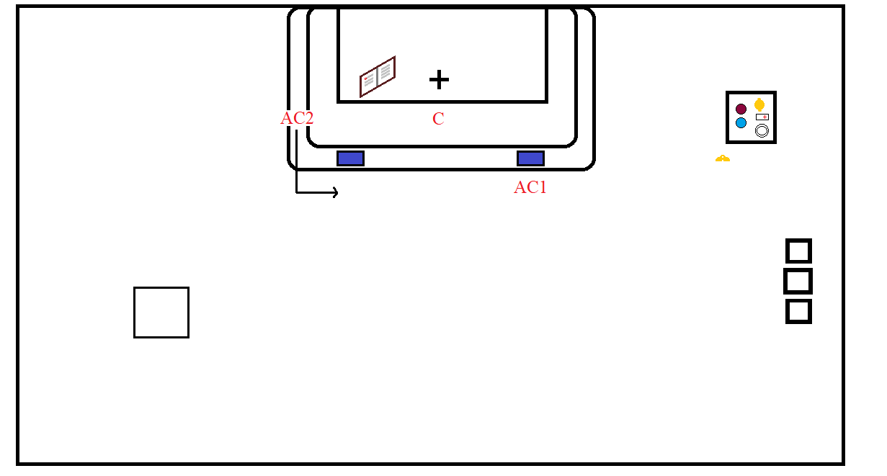
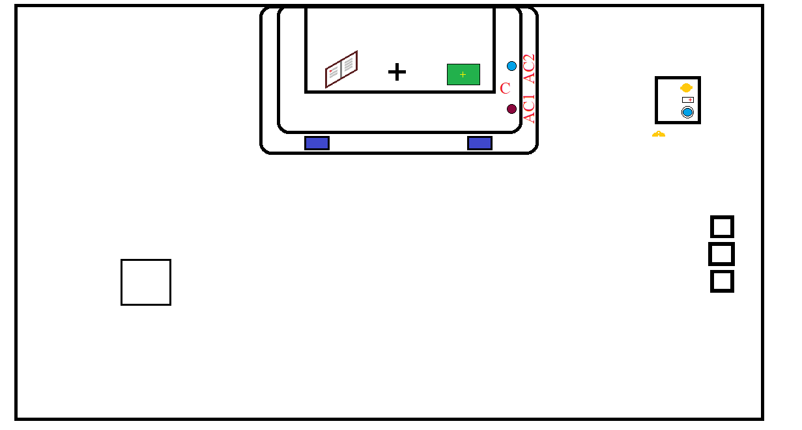

Prayers at the foot of the altar
Introit to epistle
After the epistle, both servers rise and go to the center
Genuflect
The second server will pass in front of the first and go to the missal
He will pick up the missal, and decend diagonally down the steps to the center
Genuflect
The second server will ascend diagonally up the steps to the gospel side and place the missal on the altar facing the center. As he is doing this the first server will turn to his right and stand in front of his place
The second server will remain near the missal until the name of Jesus is said, or if it is not said when the first line of the gospel is finished. The first server will turn towards the Gospel when it starts
The second sever will then go to, and stand at, his place
After the gospel if there is to to be a homily the celebrant and the servers will go to the center
Genuflect
The celebrant will go to the pulpit, and the servers their seats
Homily
After the the homily the servers will go to the center with the celebrant
Genuflect
"The celebrant will ascend the altar and the servers will go and kneel at their places

Father will remove the chalice veil
When the veil is removed go to the center
Genuflect
Go to the credence table
The First server will pick up the wine. The second server will pick up the water
They will go to the second step. They will both slightly bow, the first server will hand the celebrant the wine with his right hand. When the celebrant is done he will hand it back to the first server who will recieve it with his left hand. The second server will do the same with the water. When both servers have their cruet they both together and return to the credence table

For the washing of the hands the first server will hold the hand-towel and the second server will hold the water and lavabo bowl
The servers will meet father at the steps, bow, the second server will pour over the celebrant's hands and stop when he raises his thumb. The first server will then hold out the hand-towel for the celebrant to dry his hands then bow again once the first server receives the towel
Both servers return to the credence table place and everything away. The first server will then pick up the bells
Both servers go to the center
Genuflect

They then go to kneel at their place

When the celebrant, after the preface, says 'sanctus sanctus sanctus' the first server will ring the bell three times
When the celebrant places his hands together over the chalice ring the bells once

Rise and kneel at the feet of the celebrant on the top step
The celebrant will bow and say the words of consecration, he will then genuflect. The first server will ring once for the genuflection. Both servers will raise the chasuble at the elevation of the host and the first server will ring the bells three times

Just as in the first elevation the celebrant will bow and say the words of consecration, he will then genuflect. The first server will ring once for the genuflection. Both servers will raise the chasuble at the elevation of the chalice and the first server will ring the bells three times

Both servers than return to their place kneeling until the 'Domine, non sum dignus'. The celebrant will say this three times and for each time the first server will ring the bells

After the Domine, non sum dignus both servers rise, go to the center
Genuflect/p>
The second server will remain in the center as the first server, carring the bells, goes to the credence table.
He places the bells down and picks up the patten
He returns to the center and both servers kneel in place
'After the celebrant has consumed the presious blood the servers may say a second confeitor if it is the celebrant's wish. Always ask before hand whether there will be a second confeitior when serving for the first time with a preist. After he presents the host and the people's 'Domine non sum dignus' concludes the servers will receive
Usually the second server will then go to kneel at his place and the first server will assit with the communion of the faithful. If there are two rows of people and an available patten the second server may assist in distribution
After the communion of the faithful is over the server/s hand/s his/their patten/s to the celebrant. If the tabernacle is open the kneel at their place until it is closed.
When it is closed both servers go to the center
Genuflect and go to the credence table
The first server picks up the wine, the second server picks up the wate
They go to the second step
At the preists indication the first server will go to and pour wine in the chalice
Then after the celebrant has consumed the wine he will come over to both servers. The first server will pour a small amount of wine into the chalice over the celebrants fingers, the second server does the same with the water
After placing the cruets on the credence table both cervers go to the center
Genuflect and go to the sides of the altar. The first server picks up the chalice veil, the second server picks up the missal
They decend diagonally towards the center genuflect
Then they ascend the steps diagonally. The second server going first places the book facing forwards on the epistle side, the first server then places the chalice veil on the gospel side
Both servers than go to the place nearst to them and kneel
Rise for the last gospel. The first server will hold the last gospel card if nessisary
The servers will join father at the foot of the altar and kneel for the lienine prayers